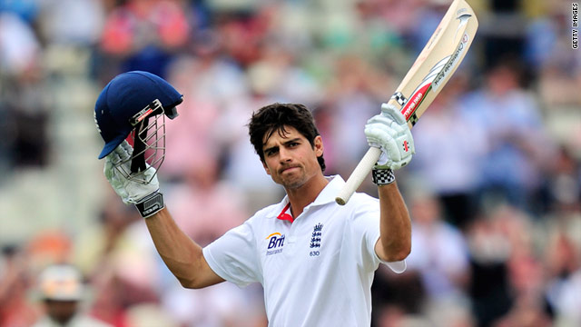

Alastair Cook
Role: Left-Handed Opening Batsman
Bio: Alastair Cook is one of England's most successful Test captains and opening batsmen, known for his resilience and concentration at the crease. He holds the record for the most Test runs by an England player and has been a pivotal figure in English cricket for over a decade.
Career Stats
| Format | Matches | Innings | Not Outs | Runs | High Score | Average | Strike Rate | 100s | 50s | Wickets | Best Bowling |
|---|---|---|---|---|---|---|---|---|---|---|---|
| Test | 161 | 286 | 8 | 12472 | 294 | 45.35 | 79.67 | 33 | 57 | 12 | 3/9 |
| ODI | 92 | 75 | 8 | 3204 | 137 | 40.43 | 87.29 | 8 | 15 | 0 | N/A |
| T20I | 37 | 32 | 2 | 804 | 90* | 31.47 | 125.05 | 0 | 4 | 0 | N/A |
Memorable Moments

Cook's brilliant performances during the 2010-11 Ashes series, helping England regain the Ashes in Australia.
His record-breaking 294 against India, marking one of the highest individual scores in Test cricket for England.